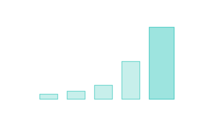

Specific Impulse (Isp)
How efficient an engine is — how many seconds a kilogram of propellant produces a kilogram of thrust.

101 · zoom in
If you've ever cared about miles-per-gallon for a car, specific impulse is the same idea for rockets. It tells you how efficiently the engine converts fuel into push. Higher Isp = better mileage = more ∆v from the same propellant load.
The unit is weird — it's measured in seconds, which makes no intuitive sense at first. The reason is historical: Isp = thrust ÷ (fuel-burned-per-second × Earth's gravity). The seconds cancel out almost everything else. The bigger the number, the more efficient the engine, and you can compare engines across decades and continents using the same number.
The range is huge. Solid rockets (the boosters on the Space Shuttle): ~250 seconds. Liquid hydrogen-oxygen (best chemical you can do): ~450 seconds. Hypergolic storables (cheap, reliable, what most spacecraft sip on for course corrections): ~310 seconds. Ion engines (super efficient but very low thrust): 3,000-9,000 seconds. The practical rule: for getting off planets, you need high thrust; for cruising in deep space, you want high Isp. Real missions stage their choices — chemical to escape Earth, ion to cruise.
Isp is the fuel-economy number for rockets. Higher is better. Definition: divide thrust by propellant mass-flow rate, divide by `g₀` (standard gravity), get a number in seconds. Burn one kilogram of propellant per second, get `Isp × g₀` newtons of thrust.
The number ranges over four orders of magnitude. Solid rockets: 250s. Hydrogen/oxygen liquids (Space Shuttle Main Engine): 452s. Hypergolic storables (Apollo Service Module): 314s. Ion drives (Dawn, BepiColombo): 3000-9000s. Nuclear thermal (NERVA, never flown): 800-1000s in theory.
Trade-offs everywhere. High Isp usually means low thrust — ion engines push ten newtons or so, useful for years-long deep-space cruises but useless for getting off Earth. Chemical engines deliver mega-newtons of thrust but burn through propellant in minutes. Real missions stage the choice: chemical for ascent, ion for cruise.
SEE IN THE APP
- /missions Rocket detail shows engine Isp